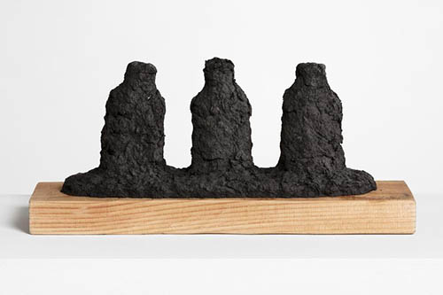
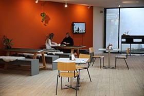
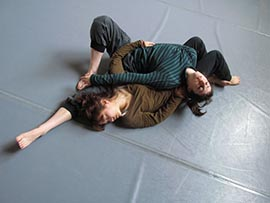

Guidet tour i udstilling 3
Vælg din placering i rummet og læs eller lyt
Water From Ganges River in the Cup Made with Newspaper from Congo
Kim Beom
Gennem humor og små vittige ordspil viser han os det kendte i det ukendte og omvendt. Ved at ændre reglerne for, hvordan vi ser, fortolker og sanser, graver han både i vores indre psykologi og vores fælles virkelighed.r
Toeren
Kim Beom
Hvad sker der, når vores perspektiv forskydes bare en anelse? Med poetisk legesyge udforsker Kim Beom sansningen af vores fælles verden i så forskellige medier som tegning, video, maleri, skulpturer, installation, tekst og bøger
Land
Kim Beom
Hos Kim Beom hænger alt sammen, mens intet er, hvad det ser ud til. Selv en lille ændring i et hverdagsobjekt kan omstyrte vores opfattelse